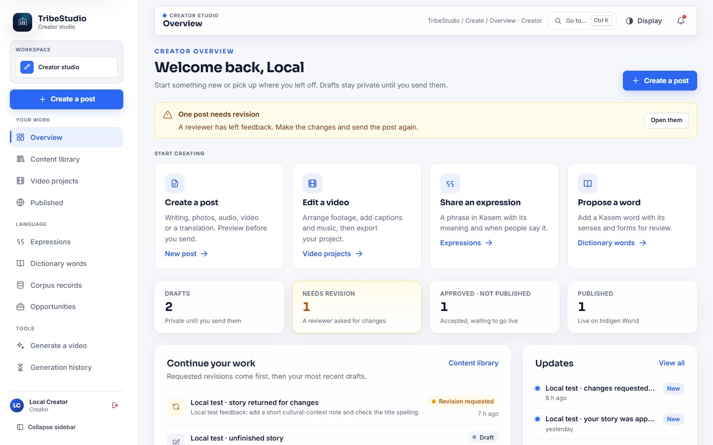
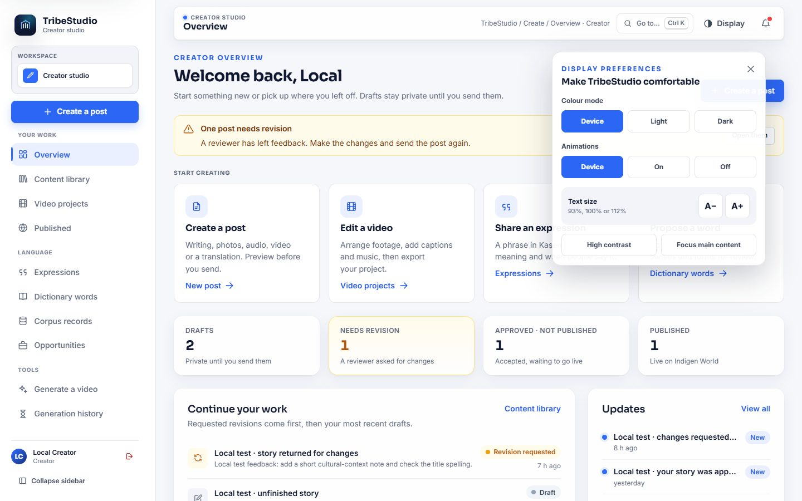
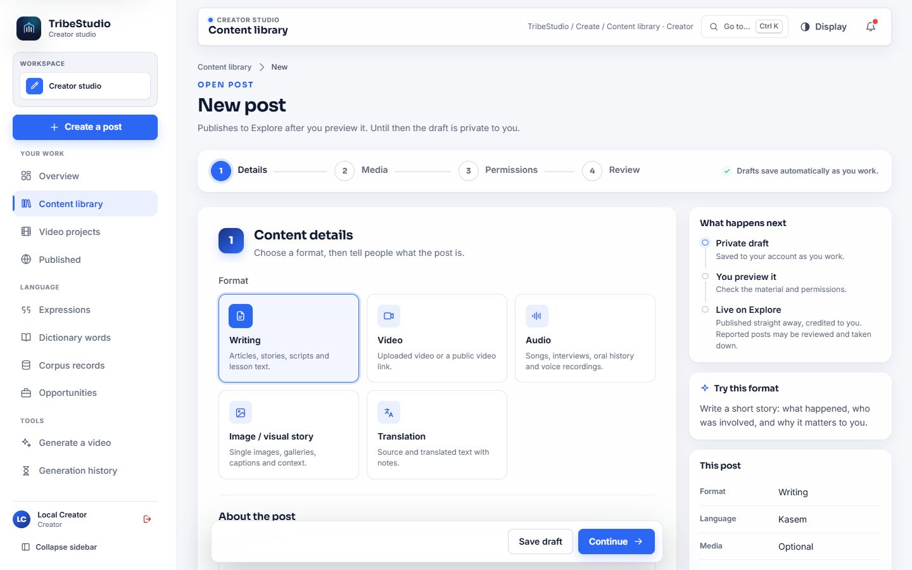
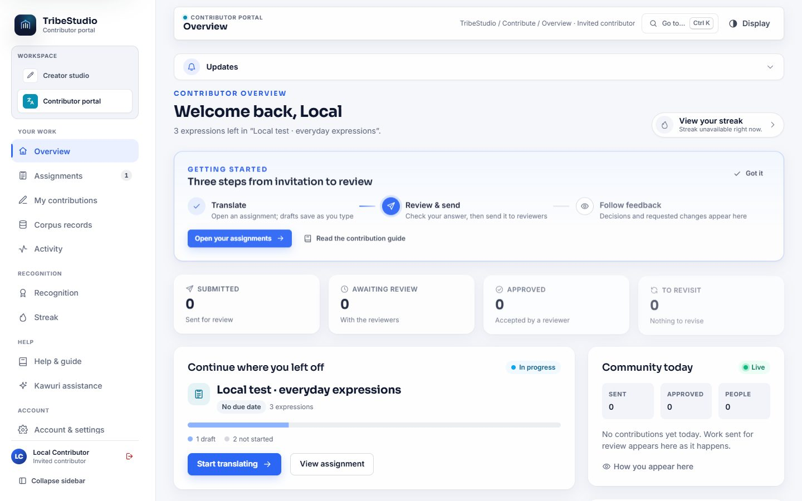
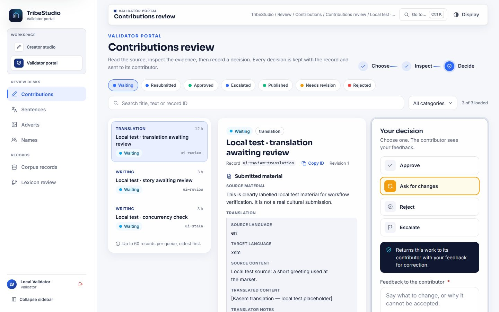
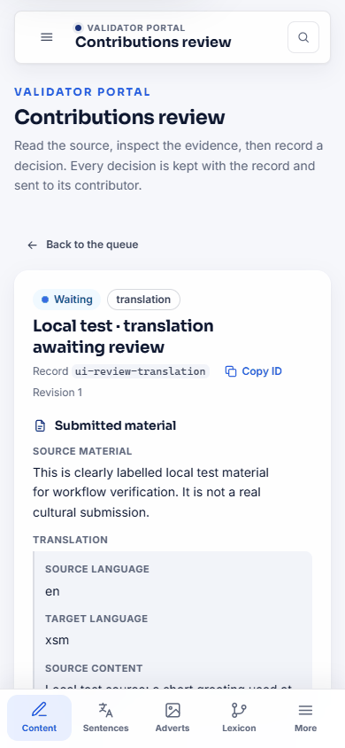
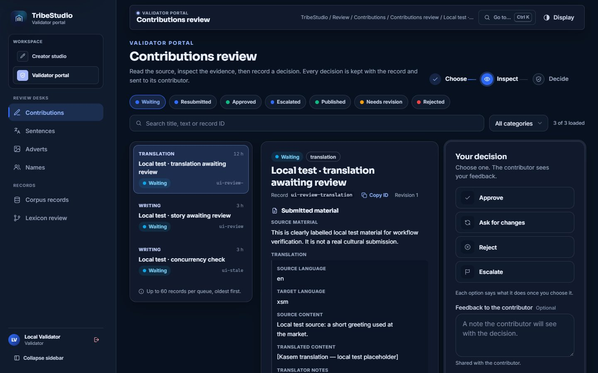
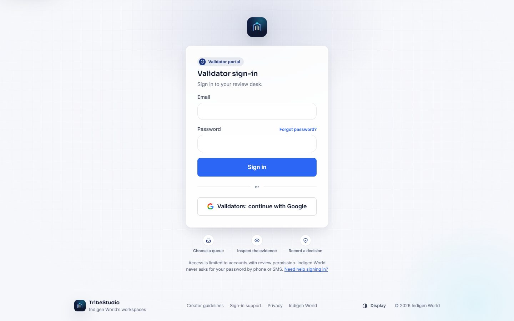

TribeStudio, the contributor portal and the validator portal now share one calm design: the same type, the same blue and ink colours, the same way of showing where you are, and a Display switch that lets you choose light or dark, larger text and whether anything on the page moves.

All three workspaces were redrawn on one design system. Headings use Sora and body text uses Inter, both served with TribeStudio so they look the same on every computer. Panels, buttons, form fields, badges and tables follow one set of rules, so a button that sends something always looks like one, and a status always uses the same colour wherever it appears.
Every workspace now opens with the same map. The sidebar groups its sections, a moving highlight marks the page you are on, and the header card names the workspace and the page with its full path. If your account can use more than one workspace, a switcher at the top of the sidebar moves between the creator studio, the contributor portal and the validator portal; it only lists the ones your account already has. Ctrl + K opens Go to, which reaches any page by name. On a phone, the sidebar becomes a drawer and the most used pages sit in a bar at the bottom of the screen.
The Display button in the header (or in the menu on a phone) sets colour mode — your device's choice, light or dark — text size, high contrast and animations. Pages fade in, numbers count up and live items pulse gently; choose Animations: Off and all of that stops, everywhere. If your device is set to reduce motion, TribeStudio follows it unless you switch animations back on. Your choices are remembered on that device and apply before the page draws, so there is no flash of the wrong colours.

The overview leads with four ways to start — a post, a video, an expression or a dictionary word — then shows your drafts, revisions, approved and published work as counts that open the matching list. Anything a reviewer sent back is listed first, with their note.
Creating a post is four clear steps: details, media, permissions and review. A panel beside the form says what happens next — an open post goes live on Explore once you publish it, while a campaign entry is reviewed first — and the save state is always in view. Each post's own page now shows where it stands, from draft to decision to publication.

The expressions and dictionary desks keep every field they had, with numbered sections, larger Kasem letter buttons and, for dictionary words, the completeness checklist beside the preview of the entry as a learner will see it. The content library, published work, notifications, opportunities, profile, help and the video tools were all redrawn in the same style.
The contributor portal keeps its assignments, translation workbench, contribution history, guide, Kawuri assistance, points and account settings, now in the shared layout. The first screen still answers three questions in order: what to do next, what needs attention, and where you stand.

The review desk shows the queue, the record and your decision side by side. Each decision says what it will do before you record it, and asking for changes or rejecting still requires a note for the contributor. Corpus records opened from the validator portal now stay inside the validator portal's map.



Each portal has its own sign-in screen in the same design, naming the portal you are entering and the three steps of the work inside. Sign-in methods are unchanged: Google for the creator studio and validators, and the email and password from your invitation for contributors.

This is a redesign, not a change of rules. Your records, drafts, permissions, invitations, review authority, points and payment settings are untouched, and no contribution types, reward rules or review powers were added. Two small fixes ride along: opening the post form no longer saves an empty “untitled” draft by itself, and a corpus or points error now explains itself instead of showing a bare code.